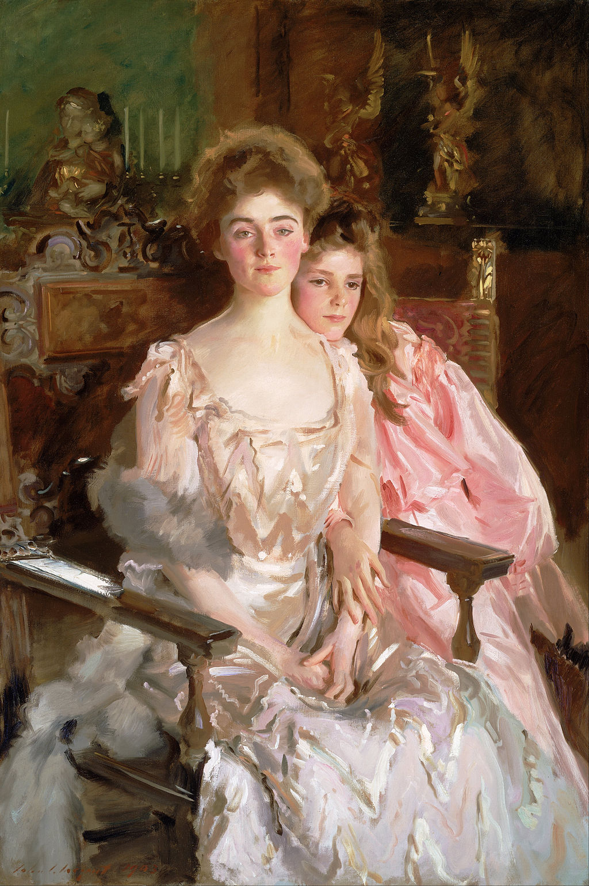

<head>
<meta charset="UTF-8" />
<meta name="keywords" content="drawing, painting" />
<meta name="description" content="drawings by Sunjy" />
<title>Sunjy</title>
<link rel="shortcut icon" type="image/x-icon" href="../../mImages/mCommon/favicon.ico" media="screen" />
<link rel="stylesheet" type="text/css" href="../../mCsses/mCommon/mCssA.css" />
<link rel="stylesheet" type="text/css" href="../../mCsses/mCommon/mCssB.css" />
<link rel="stylesheet" type="text/css" href="../../mCsses/mCommon/mCssC.css" />
<link rel="stylesheet" type="text/css" href="../../mCsses/mCommon/mCssD.css" />
<link rel="stylesheet" type="text/css" href="../../mCsses/mContent/mCssA.css" />
<link rel="stylesheet" type="text/css" href="../../mCsses/mContent/mCssB.css" />
<link rel="stylesheet" type="text/css" href="../../mCsses/mContent/mCssC.css" />
<link rel="stylesheet" type="text/css" href="../../mCsses/mContent/mCssD.css" />
</head>
<script type="text/javascript" src="../../mScripts/mContent/mContentAA.js" /></script>
<script type="text/javascript" src="../../mScripts/mContent/mContentAB.js" /></script>
<script type="text/javascript" src="../../mScripts/mContent/mContentAC.js" /></script>
<script type="text/javascript" src="../../mScripts/mContent/mContentAD.js" /></script>
<script type="text/javascript"></script> 
<script type="text/javascript">
document.write('<div class="mImgAbsolute"></div>');
/*
document.write('<p class="mFontSizeBColor" />From a white paper...</p>');
document.write('<table class="center"><tr><td>');
document.write('');
document.write('</td></tr></table>');
*/
</script>


<script type="text/javascript">
document.write('<p class="mFontSizeBColor" />Mrs. Fiske Warren and Her Daughter Rachel</p>');
document.write('<p class="mFontSizeSColor" />“Mrs. Fiske Warren (Gretchen Osgood) and Her Daughter Rachel” is an oil on canvas portrait painting completed in 1903 by the American portrait artist John Singer Sargent.<br><br>Gretchen Osgood Warren came from a prominent Boston family and was an accomplished poet as well as being an actress and singer.<br><br>She posed with her eldest daughter Rachel at Isabella Stewart Gardner’s Mansion (now the Isabella Stewart Gardner Museum), where Sargent had set up a temporary studio.<br><br>Gretchen was born in 1871 to an affluent family from the historic neighborhood of Beacon Hill, Boston. Due to her family’s wealth, she was able to study and pursue music and drama. <br><br>She married into another affluent Beacon Hill family when she became the wife of Fiske Warren in 1891, twelve years before this painting.<br><br>Sargent depicts Gretchen seated in a Renaissance-style chair with her daughter tightly by her side and seated on a smaller chair by her side. S<br><br>argent is emulating an aristocratic pose while using a modern approach to the brush strokes.<br></p>');
document.write('<table class="center" /><tr><td>');
document.write('<br>Gretchen Osgood Warren came from a prominent Boston family and was an accomplished poet as well as being an actress and singer.<br><br>She posed with her eldest daughter Rachel at Isabella Stewart Gardner’s Mansion (now the Isabella Stewart Gardner Museum), where Sargent had set up a temporary studio.<br><br>Gretchen was born in 1871 to an affluent family from the historic neighborhood of Beacon Hill, Boston. Due to her family’s wealth, she was able to study and pursue music and drama. <br><br>She married into another affluent Beacon Hill family when she became the wife of Fiske Warren in 1891, twelve years before this painting.<br><br>Sargent depicts Gretchen seated in a Renaissance-style chair with her daughter tightly by her side and seated on a smaller chair by her side. S<br><br>argent is emulating an aristocratic pose while using a modern approach to the brush strokes.<br>" />');
document.write('</td></tr></table>');
</script>


